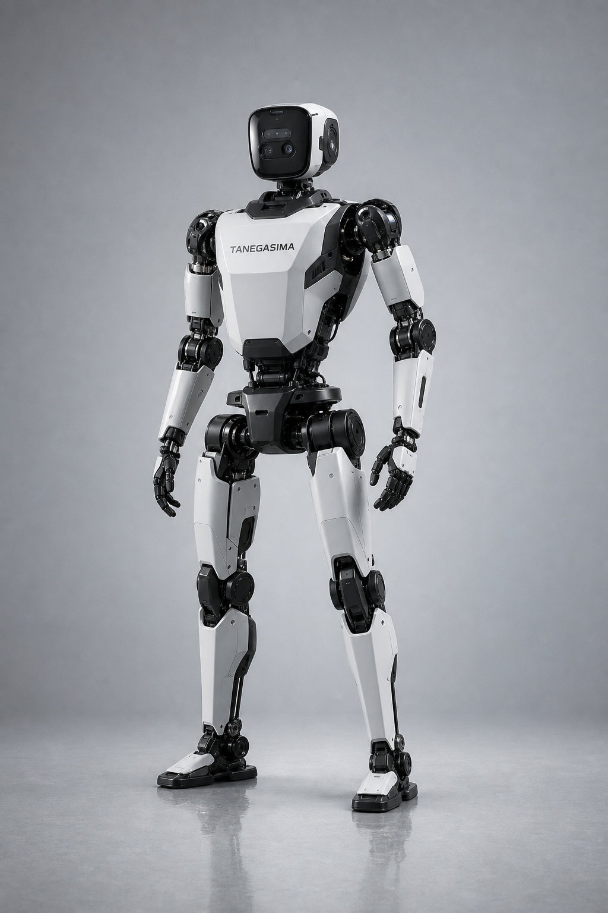
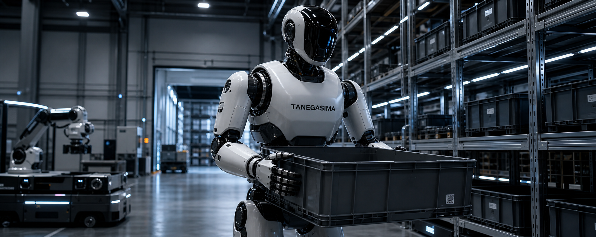

工場・倉庫・接客フロアをまたぐ現場実装を想定した産業グレード人形ロボット。歩行、把持、搬送、案内を一体化し、AIアプリケーションを実運用へ接続するための主力プラットフォームです。

量産導入やPoC提案時に使えるレベルの大まかな指標として整理しています。実案件ではエンドエフェクタ、バッテリー構成、センサーパッケージに応じて最適化可能です。
人間動線への適応と安定歩行の両立を狙った標準サイズ。
歩行と上半身作業を両立する多自由度構成。
環境認識、障害物回避、把持制御向け複合センサー。
現場連携、二次開発、AIオーケストレーションに対応。
箱搬送、棚前作業、台車連携などを想定し、視覚と把持制御を統合。
工場通路やバックヤードなど既存レイアウトを崩さず導入しやすい設計。
音声、VLM、業務システム連携まで含めて上位ソフトを実装可能。

HUMANOID ENTERPRISE は、人向けに設計された空間へそのまま入れることが最大の強みです。棚前でのピッキング、容器の受け渡し、案内や接客タスクを一つの機体上で統合できます。
タスク定義、作業時間、導線、安全要求を洗い出して適用範囲を整理。
代表タスクを実機で検証し、把持や歩行の成功率を業務KPIと紐付け。
WMS / MES / 監視系と接続し、実運用フローへ組み込む。